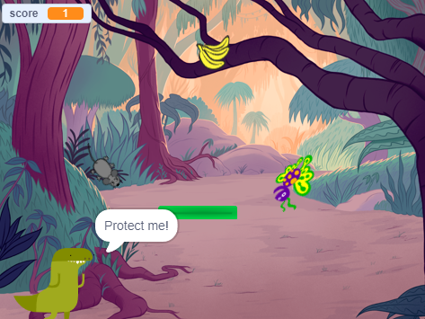
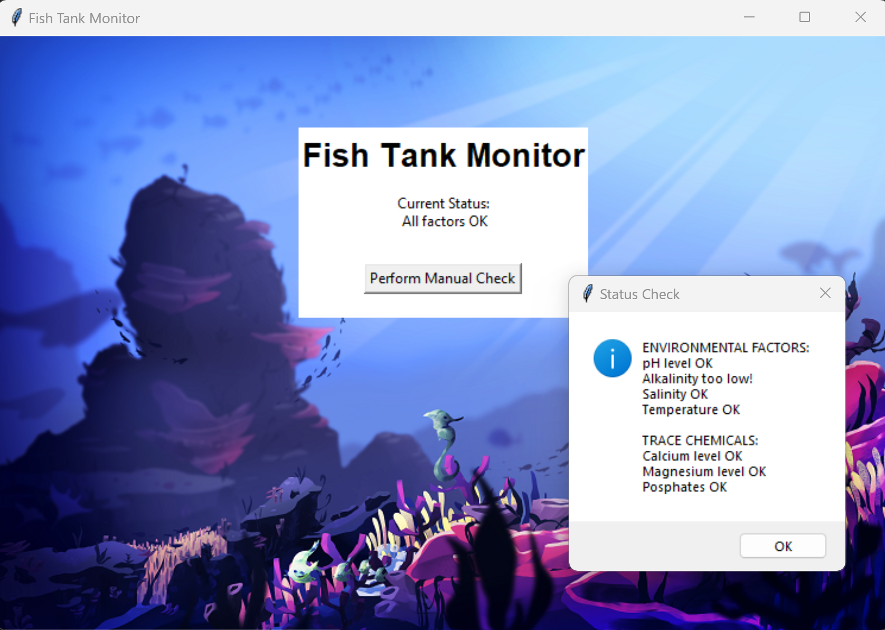
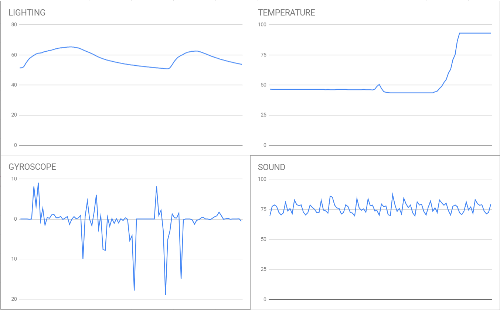

Home
Portfolio
About Me
This is my Portfolio Page!
1.19 Project - Roller Coasters

This project is the roller coaster design simulation. The resulting coaster will be based on the user's input. The user is able to select intensity and color of the roller coaster. We used variety of shapes, colors, and lines. We also used movement code and iternation & loops.
1.2.5 Project - Minion Run

This project is the minion run maze. The user will be asked to guide the minion Stuart through a maze so he can safely get back to Gru’s house, while avoiding banana peels. User input, list indexing/manipulation, functions, descriptive variable names,
and many existing turtle methods were used.
Scratch Project - Save the Character

This project is the interactive game, Save the Character. The user is tasked with protecting the character from flying objects. You will go through different terrains and try to survive long enough to reach space. Procedures, animations, counters, multiple backgrounds, costume changes sounds. and user input is used.
2.1.6 Project - A Phishy Fish Tank

This project is testing and fixing the secuirty of the fish tank moniter. The fish tank monitoring system has been compromised so we had to collect evidence, analyze the system using the debugger, and fix any problems we encounter. We also made recommendations to further improve the software.
4.1.4 Project - Bug Hunt Predators and Invasive Species

This project was a simulation that explored the stability of predator-prey ecosystems and how that stability is affected when new species are introduced into the ecosystem.
3.1.6 Project - Rover Phone Home

We concluded that the rover was located in the Rocky Mountains. After separating the data into 4 sections we assigned each data set with one of the four sensors (temperature, light, sound, and gyroscope). The temperature graph shows low values then a steep increase which connects with lower temperatures that heat up quickly during daytime. The light graph has high values that occassionally dip which connects with bright, intense light during daytime interrupted by occasional clouds. The sound graph was relatively constant with a value that is close the the decibels of wind which connects to low constant howl of the wind. The gyroscope graph did not vary much which connects with constant winds whose intensities vary.
3.2.4 Project - Making Meaning from Data

We were able to analysis the large amounts of data of honey production of the different states of the US. We were able to split the states into three levels based on their honey production as seen above. Data processing and visualizations helped us gain an insight to the overall trend of bee colonies in the different states.